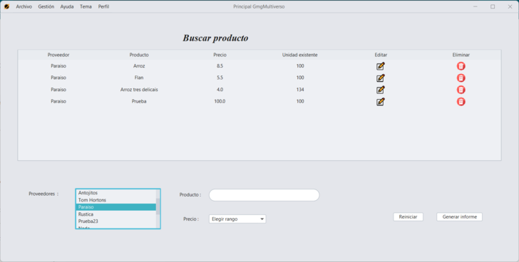
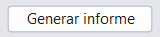
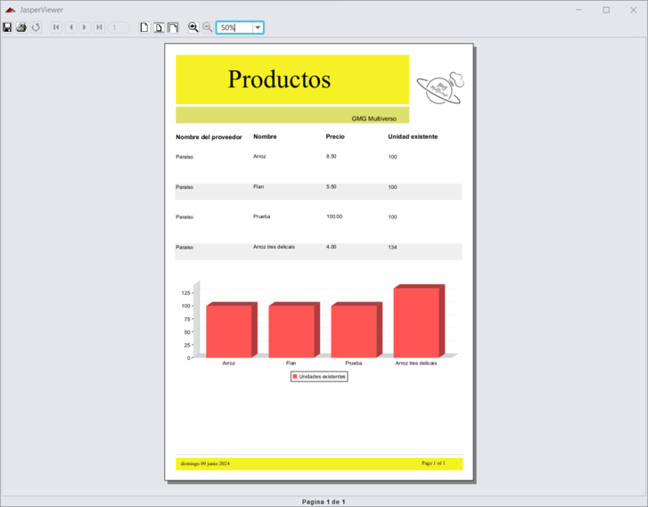
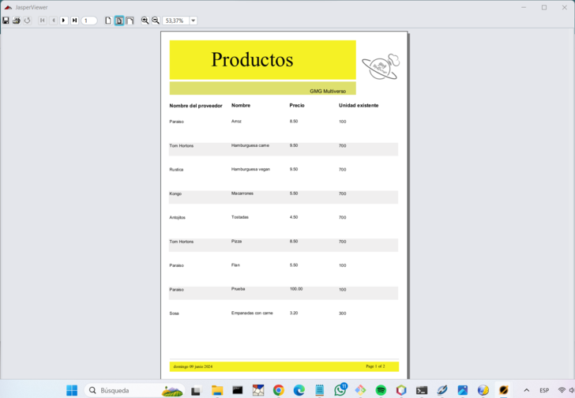

Generar Informes
Para generar un informe en el panel de Buscar, ya sea de un proveedor, un empleado o un producto, sigue estos pasos:
- Pulsa en la sección "Gestión" en el menú superior.
- Selecciona "Proveedores", "Empleados" o "Productos".
- Haz clic en "Buscar".

Una vez en el panel de búsqueda, puedes filtrar los resultados utilizando los campos específicos disponibles.
Después de filtrar, si hay resultados, al pulsar el botón llamado "Generar informe", que está situado en la esquina inferior derecha, se generará el informe con los resultados.

Si no aplicas ningún filtro, se generará un informe de todos los registros.

GMG Multiverso